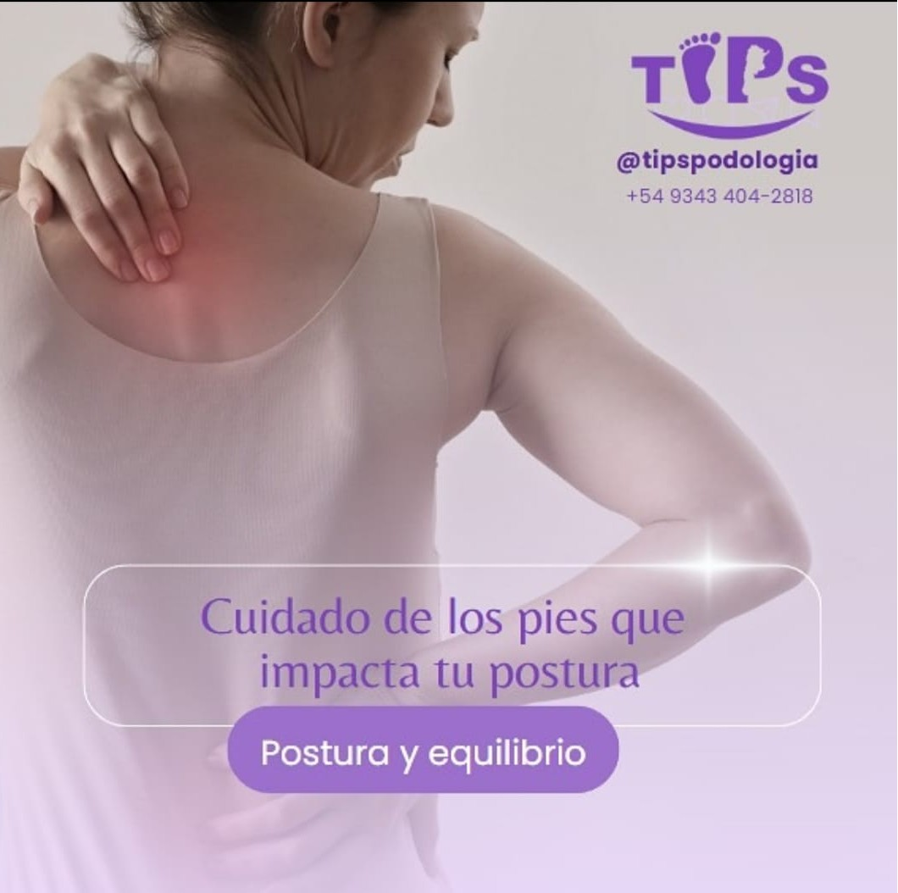

Brindamos atención podológica profesional con responsabilidad y calidad humana.
Conocé nuestros serviciosSomos un equipo de podólogas comprometidas con tu salud y bienestar. Nuestro enfoque está basado en el trato humano, la formación profesional y la mejora continua.
Callosidades dolorosas que requieren atención profesional.
Engrosamiento de la piel en zonas de presión o fricción.
Uña encarnada, tratamiento sin dolor y seguimiento profesional.
Corrección de curvatura ungueal con técnicas no invasivas.
Cada turno es reservado exclusivamente para un paciente. Si no podés asistir, avisá con al menos 24 horas de anticipación.
Podés escribirnos por WhatsApp, Instagram o solicitar tu turno desde el siguiente enlace.
Contactar por WhatsApp Reservar TurnoEn T.I.P.S contamos con un equipo de profesionales altamente capacitadas, conformado exclusivamente por Técnicas y Licenciadas en Podología. Nos enorgullece brindar una atención de excelencia basada en el conocimiento científico, la experiencia y la empatía con cada paciente.
Técnica en Podología - MP 324
Fundadora y Directora de “TIPS”. Técnica egresada de la Universidad Nacional del Litoral (FBCB), actualmente cursando la Licenciatura en Podología en la Universidad del Gran Rosario. Especialista en pie diabético, tratamientos ungueales, podología láser y más de 10 cursos de perfeccionamiento.
Técnica en Podología - FBCB UNL
Socia integrante de “TIPS”. Técnica en Podología (UNL) y Técnica Superior en Diagnóstico por Imágenes (CETED). Actualmente cursando la Licenciatura en Podología en la Universidad del Gran Rosario. Especializada en biomecánica, marcha y rehabilitación integral con enfoque holístico del paciente.